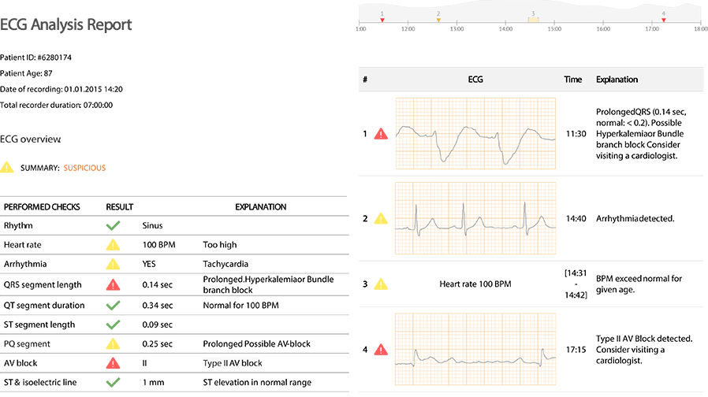

BEATCARE
BeatCare is a platform for analysis and interpretation of ECG signals.
BeatCare provides a cutting edge algorithm for ECG analysis and interpretation. The algorithms allow to perform different checks for Rhythm, Heart rate, Arrhythmia, QRS segment length, QT segment duration, ST segment length, PQ segment, AV block, ST & isoelectric line. These checks provide an overview of health condition based on the ECG signal and can reveal certain health problems.
WHAT BeatCare CHECKS
- Heart rhythm
- Heart rate
- QRS segment duration
- QT segment duration
- ST segment duration
- PQ segment duration
- ST & isoelectric line
- Changes in ST segment morphology
- Respiratory rate
- Detection of sinus tachycardia
- Detection of bradycardia
- Detection of changes in the morphology of the ST-segment
- Detection of AV block
- Detection of second degree AV block
- Detection of different type of Arrhythmia
